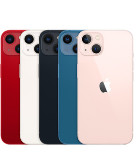
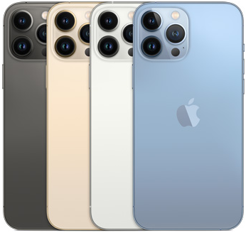

| iPhone 13 Pro | iPhone 13 Pro Max | |
|---|---|---|
| Цвет |  |  |
| Ёмкость | 128 ГБ 256 ГБ 512 ГБ 1 ТБ |
128 ГБ 256 ГБ 512 ГБ 1 ТБ |
| Камера | Система камер Pro 12 Мп: телефото, широкоугольная и сверхширокоугольная Телефото: диафрагма ƒ/2.8 Широкоугольная: диафрагма ƒ/1.5 Сверхширокоугольная: диафрагма ƒ/1.8 и угол обзора 120° Оптический зум 3× на увеличение, оптический зум 2× на уменьшение; диапазон оптического зума 6× Цифровой зум до 15× Ночной режим для портретов с применением сканера LiDAR Режим «Портрет» с улучшенным эффектом боке и функцией «Глубина» Портретное освещение (шесть вариантов: Естественный свет, Студийный свет, Контурный свет, Сценический свет, Сценический свет — ч/б, Светлая тональность — ч/б) Двойная оптическая стабилизация изображения (телефотокамера и широкоугольная камера) Оптическая стабилизация изображения сдвигом матрицы (широкоугольная камера) Шестилинзовый объектив (телефотокамера и сверхширокоугольная камера); семилинзовый объектив (широкоугольная камера) Вспышка True Tone с функцией Slow Sync Панорамная съёмка (до 63 Мп) Защита объектива сапфировым стеклом Поддержка Focus Pixels на всей матрице (широкоугольная камера) Ночной режим Технология Deep Fusion Smart HDR 4 Фотографические стили Режим макросъёмки Формат Apple ProRAW Широкий цветовой диапазон для фотографий и Live Photos Коррекция искажений объектива (сверхширокоугольная камера) Передовая система устранения эффекта красных глаз Привязка фотографий к месту съёмки Автоматическая стабилизация изображения Серийная съёмка Форматы изображений: HEIF и JPEG |
|
| Съёмка видео |
Режим «Киноэффект» для съёмки видео с малой глубиной резкости (1080p с частотой 30 кадров в секунду) HDR‑видео в стандарте Dolby Vision до 4K с частотой 60 кадров в секунду Видео 4K с частотой 24, 25, 30 или 60 кадров в секунду HD‑видео 1080p с частотой 25, 30 или 60 кадров в секунду HD‑видео 720p с частотой 30 кадров в секунду Видео ProRes до 4K с частотой 30 кадров в секунду (1080p с частотой 30 кадров в секунду для модели 128 ГБ)* Двойная оптическая стабилизация изображения при видеосъёмке (телефотокамера и широкоугольная камера) Оптическая стабилизация изображения сдвигом матрицы при видеосъёмке (широкоугольная камера) Оптический зум 3× на увеличение, оптический зум 2× на уменьшение; диапазон оптического зума 6× Цифровой зум до 9× Аудиозум Вспышка True Tone Функция QuickTake Запись замедленного видео 1080р с частотой 120 или 240 кадров в секунду Режим «Таймлапс» со стабилизацией изображения Видео «Таймлапс» в Ночном режиме Кинематографическая стабилизация видео (4K, 1080p и 720p) Следящий автофокус Возможность съёмки фотографий 8 Мп во время записи видео 4К Увеличение при воспроизведении Форматы видео: HEVC и H.264 Стереозвук |
|